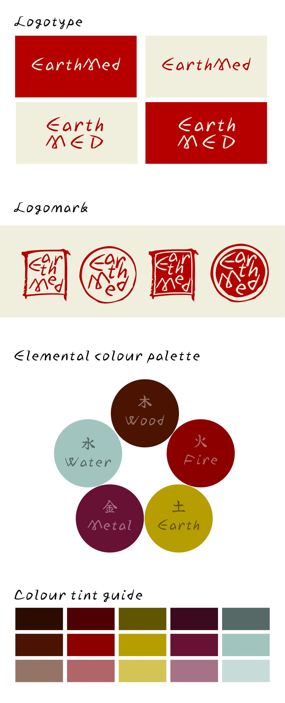
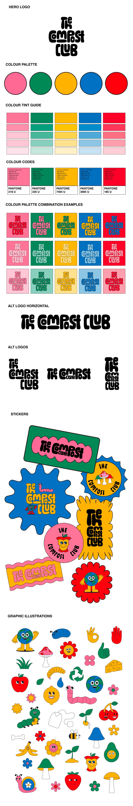
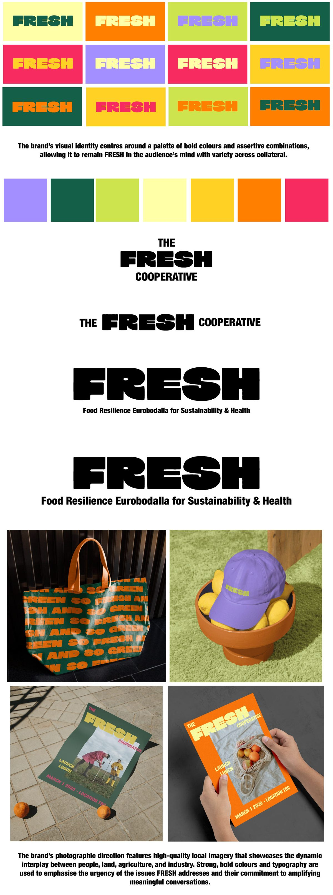
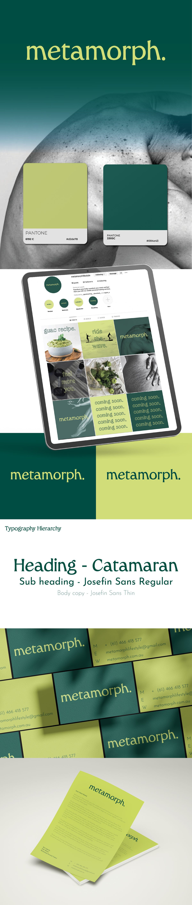
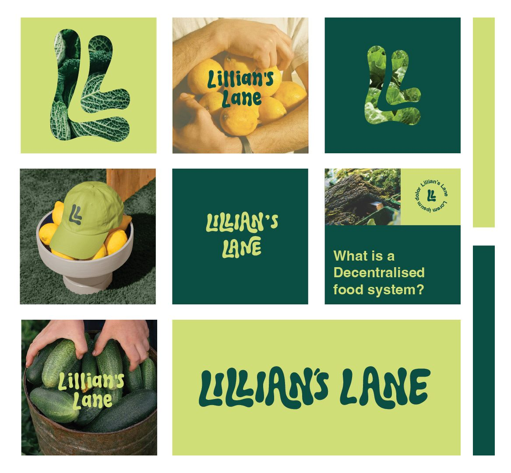
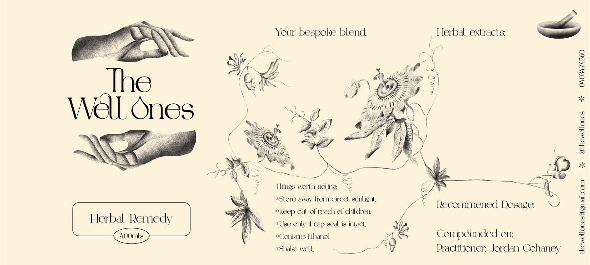
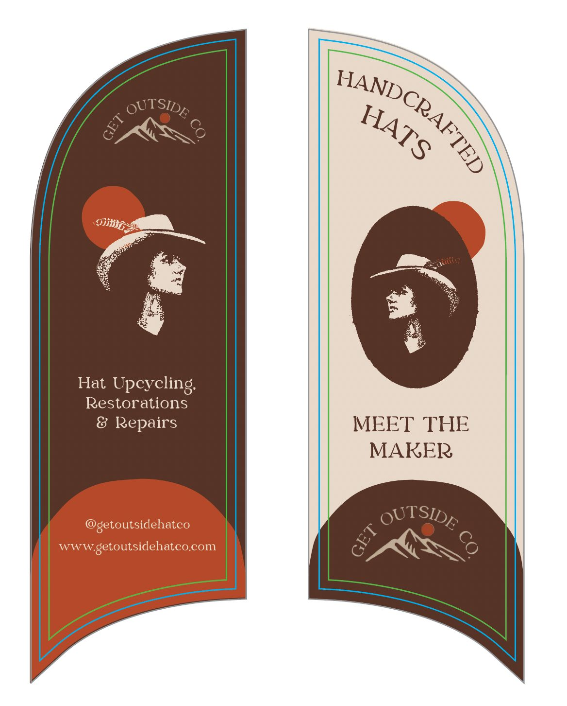
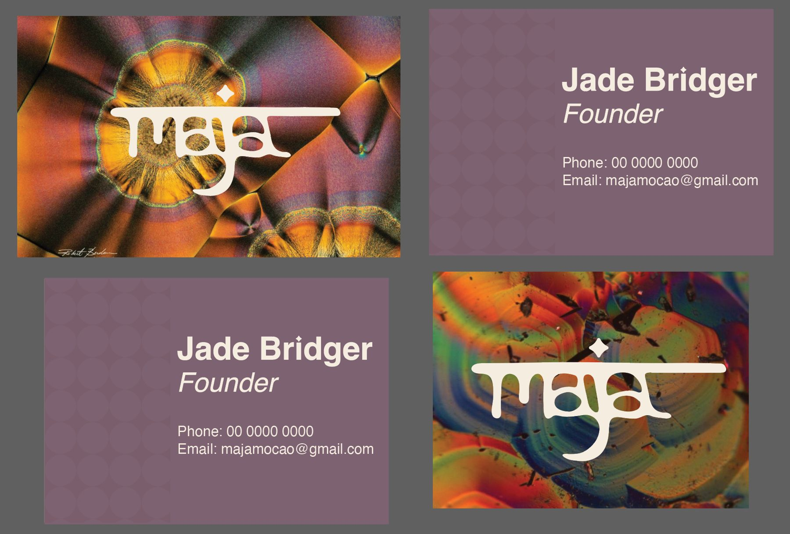

Logos, colour, type, guidelines
Brand identities
Brand systems other people can actually use.
Every brand I build ships with guidelines, so the client’s team, or the next designer, can stay consistent without me.
What I did
- EarthMed: logotype, logomark and an elemental colour palette
- A club identity with lock-ups, patterns and a sticker set
- FRESH (Food Resilience Eurobodalla for Sustainability & Health): a bright identity for a food co-operative
- metamorph.: palette, type system and stationery
- Lillian’s Lane, The Well Ones, Get Outside Co and Maja







